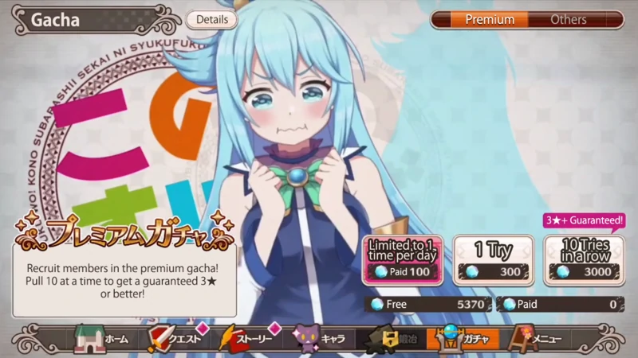
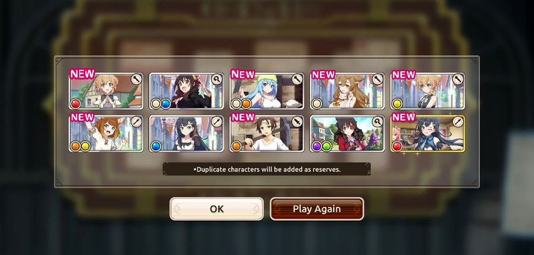

|
|  | Gacha es la forma principal de obtener tarjetas de miembro. Cada extracción de gacha cuesta 300 cuarzos, donde si realiza una extracción de 10, se le garantiza una tarjeta de miembro de 3★ o mejor. Se puede hacer una sola tirada una vez al día por 100 cuarzos pagados. |
Cualquier tirada al gacha tiene una probabilidad de: |
|
 |